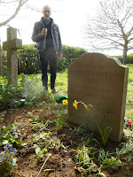
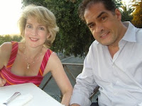
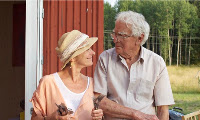

{kind=link}
The final ‘Bernie Gunther’ thriller, Metropolis by Philip Kerr was published last Thursday. So was Nicci Gerrard’s What DementiaTeaches Us about Love. Missing from the celebrations were Philip Kerr, who died from cancer in March 2018, and Nicci’s father Dr John
Gerrard whose ‘catastrophic’ decline and death in 2014 was the starting point both for John's Campaign and for the much wider concerns of this passionate new book.
At the pre-publication party for Metropolis Philip Kerr was represented by
his wife Jane Thynne who quoted Philip Larkin’s famous line, ‘what will
survive of us is love’. She would have been as aware as anyone in her audience that this statement, in context, is not unadulterated Valentine’s Day schmaltz. Here is the last verse of Larkin's ‘An
Arundel Tomb’:
{kind=link}
Time has transfigured
them into
Untruth. The stone
fidelity
They hardly meant has
come to be
Their final blazon,
and to prove
Our almost-instinct
almost true:
What will survive of
us is love.
When my
father, George Jones died, suddenly from a heart attack in June 1983, he and my mother were
in the process of divorce. It had been acrimonious and upsetting and one might almost have wondered whether the stress contributed to his end. When the news of his death came through, Mum sat for days with the curtains drawn. His body was brought
home and my brothers and I made all arrangements – cremation, memorial,
interment – and by the time we’d done that, the slate had been wiped. It didn’t
matter that Dad’s current inamorata
was at the memorial service. Mum
was the widow. I think she'd already forgotten that she'd considered anything else.
 |
| My youngest brother & our own 'Arundel Tomb' |
{kind=link}
An author, Jane reminded her listeners, is additionally survived by their books. Many writers will recognise a feeling of urgency to get a book finished, as if we’re subconsciously uncertain that we’ll live to see it through,
but Kerr had already received a terminal diagnosis. Metropolis ‘was conceived and written entirely while he was dying’. He wrote
all the time and everywhere, said Jane ‘even in the chemotherapy suite’.
 |
| Jane Thynne & Philip Kerr |
{kind=link}
None of this pressure shows in the novel – I get no feeling of famous last words, or that the author is
trying too hard. Metropolis is a prequel to the Bernie Gunther series. It's set in 1928, ten years after WW1 (the year Eric Maria Remarque published All Quiet on the Western Front and Siegfried Sassoon The Memoirs of a Fox-Hunting Man) and Gunther cannot forget the trenches -- however much he drinks, . The city of Berlin is doing its best to
blot out the past in an orgy of decadence -- a modern Babylon. A killer decides
that the city would be a better place, and the past more effectively buried if prostitutes and crippled
veterans were cleared away. So he kills them.
Jane is coming to the Felixstowe Book Festival in June to talk about her own brilliant Berlin novels – the five books in the 'Clara Vine' series. These are set a decade later when, for instance, children with birth defects or learning
difficulties might be considered better off dead. Aktion T4, operating out of a
building at Tiergartenstraße 4 in Berlin, also required German
hospitals and institutions to produce lists of patients with schizophrenia,
dementia, paralysis, and other incurable conditions, who were then rounded up and gassed -- clearing thousands of hospital beds. Baroness Mary Warnock (who died last month) shocked many of her admirers in 2008 when she
suggested people living with dementia might be helped to kill themselves if
they felt they were a burden on their families or the NHS. 'But I don’t WANT to die,’ my mother repeated endlessly, desperately, certain that this was what was planned. On her unhappy days she felt surrounded by potential killers and it was only three days before her actual death that she ceased objecting. Others admired Warnock for her courage in raising this question.
Nicci Gerrard’s balanced discussion of individual suicide pacts in What Dementia Teaches Us about Love has
attracted considerable attention in the interviews surrounding
publication. I was surprised to discover that I felt sorry for the intellectual couple she interviewed in Utrecht ‘Our life was and is a life of thought. When that goes,
well – it’s no longer our life.’ They will request euthanasia according to the recognised legal process in the Netherlands. Clearly a correct decision for them -- but I still hope there is more to existence than thought only. I’ve recently read Wendy Mitchell’s account of
the early stages of her dementia (Somebody I Used to Know) and found
myself fascinated by the changes she records in her values and perceptions as
her brain ‘softens’. Many of these changes are distressing and disconcerting but
there are gains as well: a new appreciation of
small things, an unexpected affinity with animals.
| Wendy Mitchell & her daughters |
{kind=link}
‘When you’ve met one person with dementia … you’ve met one person
with dementia.’ I wish I could remember who said that – someone wise ... Nicci will probably know. She's also coming to the Book Festival so I'll ask her. Dementia is an illness so entwined with
the developed personality but also, often, so shockingly random, so unexpected
and unpredictable. (I used to think of Mum, sometimes, as a boat without ballast,
horribly liable to tip her passengers overboard.) It’s reckless – and perhaps
dangerous – to generalise about dementia, yet almost impossible to write a book
or hold a public discussion without some use of the plural pronouns. Nicci offers a selection of other people's individual experiences and opinions to expand her own reflections. Jane Thynne's mother also died with dementia and I hope she'll join our discussion in Felixstowe. All of us challenged and struggling to do
what we hope for the best.
{kind=link}

I will bring my mother to Felixstowe in my heart but the person whose spirit I would choose to hover over our conversation is Nicci’s father. She describes him as ‘a stoic’ someone who ‘believed you must simply and with dignity endure what life hands you’. Yet in his own family life, caring and cherishing, he did his daily utmost to improve on this, for others. Like his daughter in her eloquent, imaginative way.{kind=link}